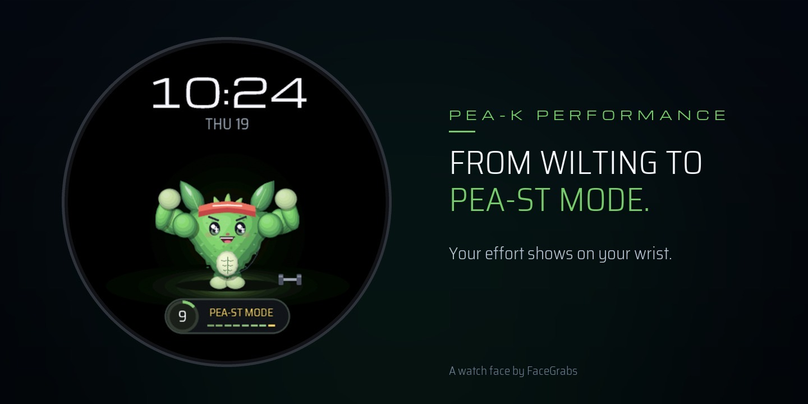
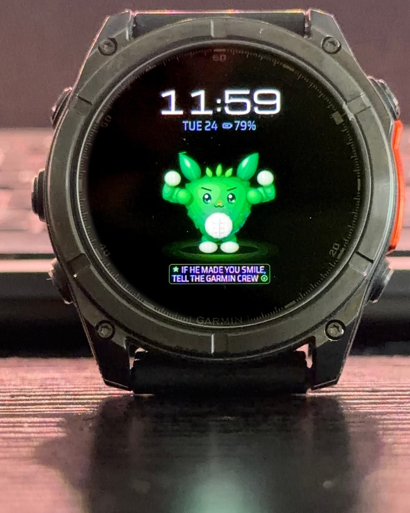

FaceGrabs / Pea-k Performance
Free watch face
Pea-k Performance
Keep him happy, keep him healthy, keep him active.
Free on Connect IQ
Meet Pea-k, the little green pea who lives on your watch and grows with your week of movement.

A tiny guy on your wrist
Pea-k Performance is the free Garmin watch face he calls home. He starts as a pea pod. Move, and something hatches.
Have a quiet stretch and he wilts. Get after it and he perks up, fills out, and keeps going. He has eleven forms, from a pod all the way to Pea-st Mode, and nobody is telling you what the road looks like.
Touch and hold him and see what he does. At night he sleeps, and if you wake him up you might catch what he dreams about.
Eleven forms
He follows your last 7 days of steps and active minutes. Good days build him up, quiet days let a little air out. Hard sessions level him up.

On a real watch
Pea-k on a real fenix 8. Tap one to enlarge.



Which watches
For now he works on round AMOLED watches: fenix 8 and fenix E AMOLED, epix (Gen 2) and epix Pro, Forerunner 165, 265, 570, 965 and 970, Venu 3 and Venu 4, vivoactive 5 and 6, Instinct 3 AMOLED, Instinct Crossover AMOLED, MARQ (Gen 2), D2 Mach 1 and Mach 2, Approach S70. The final list is whatever the store shows at approval.
Older and square-screen watches are an idea we are thinking about. See In development.
Be kind to him
We are all on the same journey. Be kind to him, and to yourself. Once he is out, if he made you laugh, rate us. Honest ratings welcome, grumpy ones too.
FaceGrabs Beta Lab: 100 founding spots
By application only. Get early access, have a say in what we build next, and talk directly with the people making it. You wear it. You use it. You help shape it.